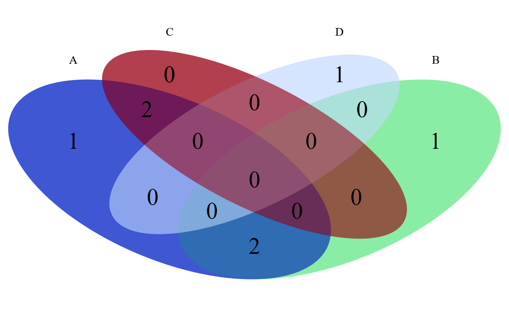
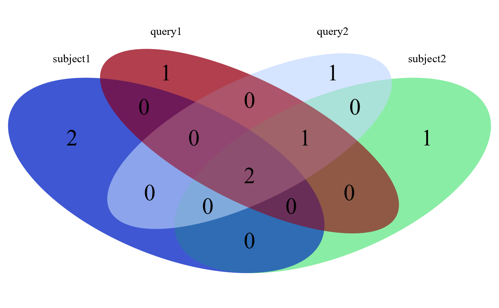

This is a helper function for Venn diagram plot. A Venn diagram is plotted as output. For GRanges, as A overlap B may not be the same as B overlap A, the order of GRanges in a list matters, certain order may produce error.
overlap_quad(aquad, overlap_fun)a list of four vectors
the name of the function that defines overlap
a VennDiagram object
test_list <- list(A = c(1, 2, 3, 4, 5), B = c(4, 5, 7), C = c(1, 3), D = 6)
overlap_quad(test_list, intersect)

#> (polygon[GRID.polygon.1226], polygon[GRID.polygon.1227], polygon[GRID.polygon.1228], polygon[GRID.polygon.1229], polygon[GRID.polygon.1230], polygon[GRID.polygon.1231], polygon[GRID.polygon.1232], polygon[GRID.polygon.1233], text[GRID.text.1234], text[GRID.text.1235], text[GRID.text.1236], text[GRID.text.1237], text[GRID.text.1238], text[GRID.text.1239], text[GRID.text.1240], text[GRID.text.1241], text[GRID.text.1242], text[GRID.text.1243], text[GRID.text.1244], text[GRID.text.1245], text[GRID.text.1246], text[GRID.text.1247], text[GRID.text.1248], text[GRID.text.1249], text[GRID.text.1250], text[GRID.text.1251], text[GRID.text.1252])
## GRanges overlap
query1 <- GRanges("chr19",
IRanges(rep(c(10, 15), 2), width=c(1, 20, 40, 50)),
strand=c("+", "+", "-", "-")
)
query2 <- GRanges("chr19",
IRanges(rep(c(1, 15), 2), width=c(1, 20, 40, 50)),
strand=c("+", "+", "-", "-")
)
subject1 <- GRanges("chr19",
IRanges(rep(c(13, 150), 2), width=c(10, 14, 20, 28)),
strand=c("+", "-", "-", "+")
)
subject2 <- GRanges("chr19",
IRanges(rep(c(13, 50), 2), width=c(10, 14, 20, 21)),
strand=c("+", "-", "-", "+")
)
overlap_quad(list(subject1 = subject1, subject2 = subject2, query1 = query1,
query2 = query2), filter_by_overlaps_stranded
)

#> (polygon[GRID.polygon.1253], polygon[GRID.polygon.1254], polygon[GRID.polygon.1255], polygon[GRID.polygon.1256], polygon[GRID.polygon.1257], polygon[GRID.polygon.1258], polygon[GRID.polygon.1259], polygon[GRID.polygon.1260], text[GRID.text.1261], text[GRID.text.1262], text[GRID.text.1263], text[GRID.text.1264], text[GRID.text.1265], text[GRID.text.1266], text[GRID.text.1267], text[GRID.text.1268], text[GRID.text.1269], text[GRID.text.1270], text[GRID.text.1271], text[GRID.text.1272], text[GRID.text.1273], text[GRID.text.1274], text[GRID.text.1275], text[GRID.text.1276], text[GRID.text.1277], text[GRID.text.1278], text[GRID.text.1279])